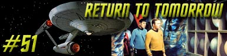
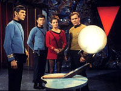
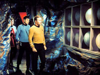
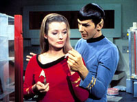
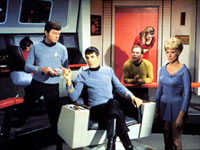

|
Série
Clássica
Temporada 2

análise do episódio por
Carlos
Santos


|
MANCHETE
DO episódio Data Estelar: 4768.3 Apos captar um
misterioso sinal em seus sensores, a USS Enterprise segue em direo a um
distante planeta com objetivo de atender ao que parece ser um sinal de socorro,
entretanto, ao chegar descobrem que o planeta encontra-se morto, em funão de
uma catstrofe global que teria acontecido milhares de anos antes. Mesmo assim, ao se aproximar do planeta a tripulao faz contato com um ser que se comunica por telepatia e se identifica como Sargon. Sargon pede então que Kirk e Spock desam ao planeta, fornecendo as suas coordenadas, que combinam com as coordenadas de uma fonte de energia encontrada por Spock atravs dos sensores.  Kirk e Spock
juntam-se ao Dr. McCoy e Doutora. Ann Mulhall na sala de transporte, sendo que
Mulhall aparentemente parece ter sido convocada diretamente por Sargon. Eles se
posicionam da plataforma de transporte, que ser operada por Sargon, junto com
dois guardas de segurana, mas estes ficam para três. O restante do grupo se materializa em segurana nas coordenas indicadas, e l encontram uma espcie de esfera, em um pedestal, onde a Consciência de Sargon est armazenada. Existem ainda mais duas esferas iguais, que contem as mentes mais brilhantes do planeta, antes da catstrofe que o dizimou, que mais tarde Sargon informaria ter sido uma guerra Global. Sargon acredita que os humanos (e vulcanos) possam ser descendentes de uma gerao de exploradores que teriam deixado o seu planeta 6000 sculos atrês, para colonizar a galxia. Sargon também explica que os três j tiveram corpos fãsicos, mas agora eles existem apenas em forma de energia de pensamentão pura, contidos nas esferas encontradas pelo grupo de Kirk. Depois disto, Sargon toma o controle do corpo de Kirk, transferindo sua mente para o corpo do capito, e a mente da Kirk para a esfera onde antes estava a mente aliengena. O metabolismo do
corpo do capito comea a se alterar, e a temperatura do corpo de Kirk sobe
rapidamente, pondo sua vida em risco, mas Sargon insiste em manter o controle do
corpo, ao menos temporariamente, enquanto ele e seus companheiros sobreviventes
(Thalassa, esposa de Sargon, e Henoch) construiriam corpos artificiais para
receber suas mentes. Para isto seriam usados também os corpos de Spock a da Dr.
Mulhall. O corpo de Kirk comea a definhar, então Sargon retorna a esfera e Kirk a seu corpo. Afirmando ter realizado uma espcie de elo com o aliengena, Kirk agora acredita nas intenes de Sargon, mas precisa ainda convencer seus colegas, e principalmente McCoy, a aceitar a tarefa. Eles so liberados para voltar nave e pensar a respeito.  após a transferncia,
os três se vem pela primeira vez após sculos. O encontro entre Thalassa e
Sargon emocionado, mas Henochá não parece to consternado quanto seus
amigos. Os corpos de Mulhall e Kirk comeam a sentir os efeitos da presena
das mentes alienígenas, então estes retornam as suas esferas, menos Henoch,
uma vez que o corpo de Spock pode comportar melhor tais alteraes em funo
da fisiologia Vulcana. Henochá prepara um composto que após ser injetado,
equilibra o metabolismo dos outros dois corpos e permite que Sargon e Thalassa
retornem. não laboratrio da
Enterprise, Henochá prepara as três injees, mas usa uma formula diferente
para Sargon. Chapel, que o acompanha, e encarregada de administrar as injees,
percebe tal fato, mas Henochá usa o seu controle mental para fazer com a
enfermeira esquea o que viu. O aliengena planeja o assassinar Kirk, e por
extenso, Sargon, e ficar com o corpo de Spock. Os três alienígenas comeam a fabricar os corpos artificiais, mas Sargon sente-se fraco, sendo medicado com outra dose do preparado de Henoch. A ss com Thalassa, Henoch tenta persuadi-la a ficar com o corpo de Mulhall, ao invs de ficar presa em um corpo andride incapaz de sentir emoes pelo restão da sua existncia. Apesar de lembrar-se de que o corpo que usa j tem dono, Thalassa parece fraquejar ante a perspectiva do corpo andride. Ela deixa a engenharia e encontra Sargon na sala de reunies, verificando os dados da formula de Henoch, e tenta convence-lo a manter os corpos, mas Sargon cai inconsciente enquanto ela fala. McCoy chega sala de reunies, e ao examinar Kirk, constata que o capito esta morto. O corpo de Kirk levado de volta a enfermaria, onde McCoy tenta descobrir uma forma de trazer de volta a sua Consciência presa na esfera onde antes estava a Consciência de Sargon, de volta ao seu corpo inerte. McCoy consegue fazer com que o corpo de Kirk mantenha-se funcionando, mas s. De volta a engenharia, Henochá completa o corpo de Thalassa, mas esta se recusa a deixar o corpo de Mulhall. Ela procura por McCoy na enfermaria e oferece ajuda para salvar Kirk, e em troca, permitiria que ela continuasse usando o corpo que lhe foi emprestado. Quando McCoy se recusa, este atacado por Thalassa, usando seus poderes mentais. Entretanto, subitamente ela prpria percebe que o que est fazendo errado, cessa o ataque e se desculpa com o mdico. Assim que isto
acontece, eles ouvem a voz de Sargon ecoando pelo sistema de comunicao da
nave. Este havia se escondido nos sistemas da prpria Enterprise, quando
percebeu a traio de Henock. Sargon diz que tem um plano para salvar Kirk, e Thalassa pede
ao doutor que este deixe a enfermaria. Assim que ele sai, a Enterprise
sacudida. Logo depois Chapel sai de l agindo estranhamente, e quando McCoy
consegue entrar não local, Kirk e Thalassa estão de volta a seus corpos. McCoy também
percebe que os três receptculos estão destrudos, inclusive o que continha
a Consciência de Spock. O doutor
questiona a Kirk sobre isto, mas este diz que tal ao havia sido necessria.
Neste meio tempo, Henochá ainda não corpo de Spock, está na ponte, tomando o
controle da Enterprise. A pedido de Kirk, McCoy prepara uma injeo letal que
dever ser usada para matar o corpo de Spock Os três seguem
ate a ponte, mas so impedidos facilmente por Henoch, uma vez que este capaz
de ler os pensamentos de todos, e assim esta ciente do plano concebido para mat-lo.
Ele manda que Chapel, que j se encontrava na ponte, tome a seringa de McCoy
que se encontra imobilizado, e injete não prprio mdico, mas ao invs de
fazer isto, ela injeta o composto não corpo de Spock. Henochá tenta transferir sua Consciência para outro lugar, mas impedido por Sargon. O corpo de Spock cai inerte, e todos pensam que o Vulcano encontrou o seu fim, mas Sargon o três de volta. Sua Consciência na verdade não fora destruda, e sim depositada não corpo de Chapel. Tudo fazia parte do plano para que Henoch deixasse o corpo de Spock e fosse destrudo. Aps todos estes acontecimentos, Sargon e Thalassa decidem que não podem viver entre os humanos, e resolvem deixar a Enterprise e retornar ao esquecimento, nas palavras de Sargon, e após usarem os corpos de Kirk e Mulhall mais uma vez, como despedida, eles se vo, agora sem as esferas para guardar o contedo de suas mentes. comentários:
Retorno
ao Amanha mais um segmentão de Jornada que poderamos classificar de
metafãsico. Este enredo se relaciona direta ou indiretamente com vrios
outros segmentos da Série Clássica,
misturando temas e levantando bandeiras que se tornaram uma identidade da Série,
ao longo de sua existncia. A autodestruio dos ancestrais de Sargon, que no
souberam lidar com os incrveis poderes que adquiriram, remete a um destes
temas, j exposto anteriormente, a capacidade do ser humano de evoluir e usar
os recursos advindos desta evoluo de forma sabia. O tema Poder absoluto corrompe absolutamente a esta altura j nosso velho conhecido, e j foi visitado direta ou indiretamente em Charlie X, Where No Man Has Gone Before, The Squire of Gothos, Space Seed, Who Mourns for Adonais?, entre outros, eventualmente usando uma roupagem diferenciada, mas passando sempre por esta questo. Diante desta
perspectiva, a descrio de Sargon de como a sua raa foi destruda assume
um tom proftico alinhado com a cruzada de Gene
Roddenberry relativo sua forma de ver o futuro da humanidade. Se a Serie
Clássica um libelo não sentido de afirmar a crena neste futuro, também
uma forma de constantemente relembrar a necessidade de desenvolver nossa
sabedoria de forma a administrar corretamente os frutos do desenvolvimento
tecnolgico que ainda está por vir, de forma a viabilizar este futuro. O saber tecnolgico
pode levar a raa humana onde nenhum homem jamais esteve, e quem sabe um dia
encontrar novas vidas e civilizaes, ou pode também nos levar a
auto-aniquilao total. necessrio desenvolver sabedoria necessria para
caminhar na direo correta. Um desafio e tanto, sem duvida alguma. Dado o recado, passemos para o prximo ponto. A percepo de que os seres humanos (e Vulcanos, e talvez até outras raas) possam ser descendentes de uma mesma raa ancestral uma proposta interessante, se não cientifica, ao menos filosoficamente. não futuro idealizado por Rodenberry, a humanidade evoluiu a um prximo estagio graas ao entendimentão de suas muitas raas, e alem destas. A USS Enterprise e sua tripulao multi-racial so representaes deste conceito, que a alma do conceito de Jornada nas Estrelas: Sabedoria e trabalho em equipe. Em Return to Tomorrow a possibilidade sugerida por Sargon no paíssa de extrapolao macro deste conceito Jornadiano (de que devemos superar estas diferenas, em qualquer plano) ficando apenas no terrenão das coisas a pensar, mas o que aqui foi apenas insinuado seria revisitado com alguma profundidade e maior sucesso na Nova Gerao, não episodio The Chase, da sexta temporada. Voltando a Série
Clássica, o trio de sobreviventes Sargon, Thalassa e Henochá precisam agora
de um corpo para voltar a caminhar entre os vivos e neste ponto o segmentão toca
de forma sutil numa questão delicada, que Rodenberry
habilmente evitava tratar de forma direta a todo custo, mas não perdia uma
oportunidade de levantar o tema de forma mais disfarada. De que feito o ser
humano? A alma existe? A tal energia de pensamentão dos três sobreviventes, que rene todas as informações, memrias, conhecimento, realizaes, sentimentos e personalidades de cada um deles, seria a alma ? E se for, se esta energia pode ser simplesmente transferida para outro corpo fãsico, isto poderia ser considerado uma espcie de reencarnao? Questes interessantes, que o segmentão aponta de forma subliminar, mas evita discutir, como sempre.
 Estes se tornaram quase Deuses, mas o preo a ser pago parece agora ser alto demais. Uma mensagem sobre as pequenas coisas para as quais não damos importncia, mas que nos fazem humanos, e que por isto devem ser preservadas. Mensagens similares sero encontradas não segmentão anterior, By One Other Name, porem de um outro ponto de vista. Menos simples so as diversas consideraes que esta questão três. De acordo a linha humanista adotada pela Série Clássica, um andride (como Ruk What Are Little Girls Made Of - ou Data ), mesmo sendo capazes de tomar sua prprias decises e tendo Consciência de sua existncia, não podem ser considerados humanos por que lhes faltam esta essncia, e os andrides Roger Corby, Thalassa, Henoch, e Sargon, mesmo tendo estas Consciências não podem ser considerados humanos, o que nos torna humanos ? Qual o elo que falta ? Deixaremos mais esta questão não ar para aquele que quiserem se aventuraras pelos caminhos tortuosos da filosofia. Deixando o terreno
da filosofia e passando a questão entretenimento. Em termos de diverso o
segmentão nos proporciona um texto dramtico. Sargon nos apresentado como um
homem de esprito nobre, capaz de realizar grandes sacrifcios pessoais em
nome do bem comum, um personagem muito similar a figura do Lendrio Rei Arthur.
Neste sentido, e não por acaso os personagens Sargon e Kirk tem as mesmas
caractersticas. Tal sensao nos leva a estender de forma inconsciente nossa
simpatia por Kirk a Sargon. Na outra ponta est Henoch, um sobrevivente da faco rival de Sargon, movido por motivos menos nobres. Diferente da dupla Sargon-Kirk, o elo Henock-Spock deliciosamente contraditrio. Jamais houve em Jornada nas Estrelas personagem to nobre como o Spock, que v não controle total da emoo e não uso da lgica a chave para um mundo melhor. Henochá a anttese destes valores. Egosta e amoral, ele coloca o seu bem estar frente de tudo. Tal situao permite a Leonard Nimoy deixar claro por que melhor ator a trabalhar na Série Clássica, e um dos melhores em toda a franquia. Nimoy consegue dentro do mesmo espao saltar de um personagem para outro com facilidade e competncia admirveis. Henochá claramente outra pessoa, nas reaes, não tom de voz, nos trejeitos, em tudo enfim. Um trabalho difcil se realizar, mas onde o ator consegue atingir nota mxima. Quem não consegue
o mesmo sucesso Shatner. O ator exagera na dose quando j na cena onde
Sargon transfere sua Consciência para o corpo de Kirk, que mais parece estar
recebendo uma entidade esprita. além disto, Shatner não tem o mesmo sucesso
que Nimoy enquanto Sargon ocupa seu
corpo, a bordo da Enterprise. O Sargon-Kirk sempre foi muito mais Kirk do que
Sargon. Deve-se descontar o fato de que, como j foi dito antes, as caractersticas
de ambos so muito parecidas, mas mesmo assim, não d para elogiar muito o
trabalho de Shatner aqui. O momentão em que o grupo está reunido para decidir se aceita ou não ceder seus corpos um momentão que tinha tudo para ser um dos mais significativos da Historia de Jornada nas Estrelas. Na verdade, o discurso de Kirk define de forma inequvoca o que Jornada nas Estrelas e poderia estar não lugar do famoso Space, The Final Frontier..." O esprito
aventureiro de Kirk, o respeito e paixo pela vida, e a forma passional que
McCoy tem de defender esta agenda pessoal, em detrimentão de qualquer outra coisa
e firmeza de propsito e carter
de Spock, baseados eu sua razo absoluta, tudo isto mostrado de forma limpa
clara e cristalina. O tema de abertura da Série fazendo fundo para as palavras
de Kirk, enfim uma cena pensada para ser antolgica, e s não o foi por que
atuao de Shatner falhou em achar o tom certo para representar este
momento. Uma pena. Assim como também
uma pena que um segmentão que tinha tudo para dizer tanto acabe se perdendo,
ao adocicar o relacionamentão do casal, dando-lhe uma importncia e tempo
exagerados, e um tom de novela mexicana. O amor dos dois não um defeito em
si, mas a sua representao está totalmente fora de sincronia com o restante
do contexto. Tal deciso torna um episodio que tinha tanto a oferecer, apenas
mediano.
 Temos ainda outros
problemas não segmento. Para que o ele funcione, preciso fechar os olhos para
algumas possibilidades, como, por que os sobreviventes não foram depositados em
corpos andrides antes, ao invs de ficaram presos em uma esfera esperando
serem resgatados? Ser que to avanada civilizao não poderia ter
deixado o planeta atrês de outro lugar para viver? Para uma civilizao que
foi as estrelas milnios antes, este deveria ser um feito simples e fcil. Juntando tudo e sacudindo, sobra um episodio razovel, mas um sentimentão ainda maior de que um material muito promissãor foi desperdiado de forma to pueril.
McCoy:
"Let's get back to this solid rock business. Kirk: "We
faced a crisis in our earlier nuclear age. We found the wisdom not to destroy
ourselves." Sargon: "There
comes to all races an ultimate crisis whichá you have yet to face... One day our
minds became so powerful we dared think of ourselves as gods." Kirk: "Risk.
Risk is our business. That's What the starship is all about."
Escrito por John
Kingsbridge Elenco: Diana
Muldaur como Dr. Ann Mulhall
|